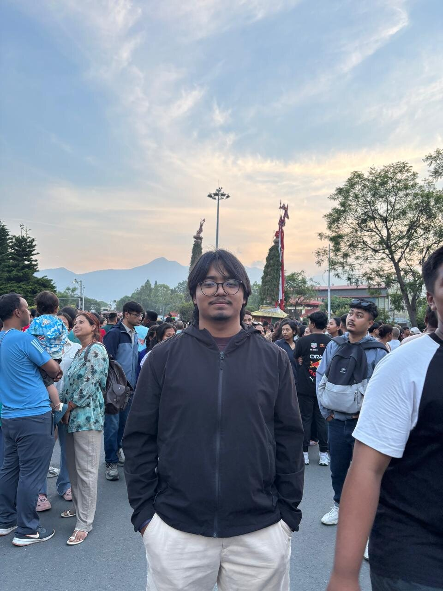
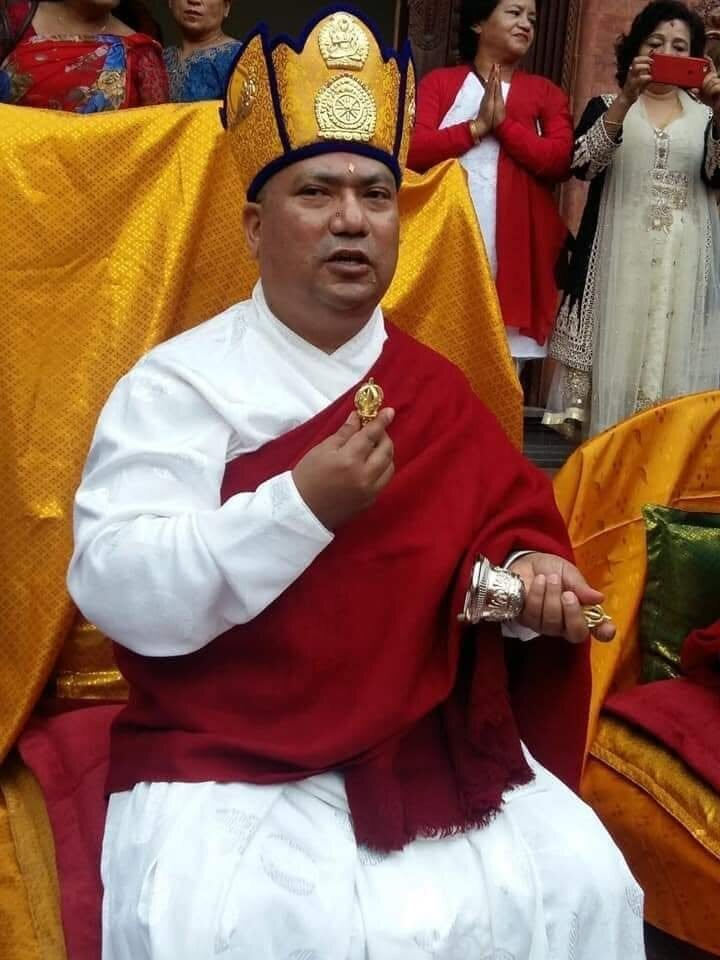
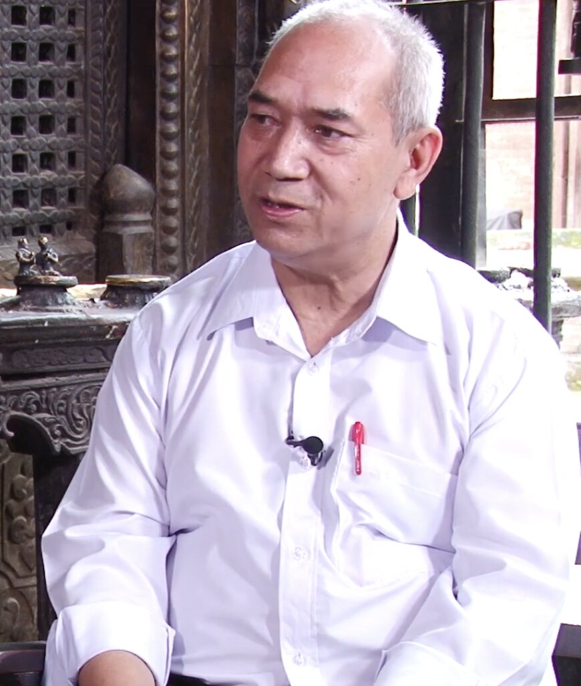

The Project
About
A digital archive built with the guidance of scholars in Nepal and the United States, so that a painting far from home can be read again by the communities whose history it records, and by anyone drawn to it.
How it all started
The ideation of the project
This project began as a final paper for a class called Art and Material Culture of Tibet, taught by Dr. Melissa R. Kerin. Abhishek Pradhan originally took the class just to fulfill an art credit requirement at his college. But when he decided to write his paper on bilampaus, he stumbled upon two paintings that stayed with him long after the semester ended.
Both paintings tell the same story of the deity Bunga Dyo. One is kept at the Philadelphia Museum of Art (PMA), and the other is in the Himalayan Art Resources (HAR) database. By comparing them side by side, Abhishek noticed that every scene in one painting matched a scene in the other. He realized these paintings were like storybooks; they used a visual pattern to ensure the legend was told faithfully.
While the PMA bilampau was dated 1712 AD on the museum’s website, the HAR bilampau had no information at all, not even a date. He had many more questions, so he reached out to Dr. Naresh Man Bajracharya, who then read the old Prachalit inscriptions and found that, as in the PMA painting, the third register of the HAR painting contained a recorded date. However, this date was Nepal Sambat 737, which converts to 1616 CE. This meant that nearly a century later, an artist was asked to create an accurate copy of the same Bunga Dyo painting, likely to decorate the commissioner’s house and, above all, to remember the legend of the deity and the rituals of the living tradition.
After finishing the class and the final paper, Abhishek felt he hadn’t fully discovered the painting. It was clear how much is lost when inscriptions go unread. This digital archive grew out of that concern: to read the painting again in full and to restore its voice, making it a historical object rather than merely decorative. While the bilampau is displayed in Philadelphia and often viewed as art, the Nepalese people, especially the Newar community, see it as a representation of their beloved traditions. This project is a small effort toward a larger movement to reconnect Himalayan art with its living cultural context rather than viewing it as a static museum object, so that we can finally prioritize function over form.

 HAR · 1616 CE
PMA · 1712 CE
HAR · 1616 CE
PMA · 1712 CE
Further reading
What the gallery takes off
Writing about Kashmiri sculptures worshipped in the Western Himalayas, the art historian Rob Linrothe describes two opposing ways of encountering a sacred object: “contaminated” and “decontaminated”. Devotion is the “contaminated” mode: it touches the image, dresses it, burns butter lamps before it, and leaves offerings until the sculpture underneath can no longer be seen clearly. The museum operates in the “decontaminated” mode, removing the cloth and ornament so that nothing stands between the eye and the object but glass, and placing it next to a label and wall text where the offerings used to be.
Linrothe does not argue that museums are wrong to do this. He argues that what is removed was never decoration and that its removal should be named rather than mistaken for cleaning. This archive is built on the same idea: the inscriptions, the donors, and the rituals are not additions to the painting. They are the painting.
Rob Linrothe, Collecting Paradise: Buddhist Art of Kashmir and Its Legacies (Rubin Museum of Art, 2014), introduction. Melissa R. Kerin, this project’s faculty advisor, is a co-author of the same catalogue and makes a related argument about museum shrine rooms in The Fetishistic Fiction of Museums’ “Tibetan” Shrines ↗
People

Project author
Abhishek Pradhan
Abhishek Pradhan is an undergraduate student at Washington and Lee University, pursuing a Bachelor’s degree in Computer Science and Economics. He is the creator and author of The Bunga Dyo Painting project. Abhishek was born and raised in Kathmandu and is a member of the Newar Community. After discovering a bilampau rich in his cultural traditions at the Philadelphia Museum of Art, he was inspired to spend a summer in Nepal documenting the festival depicted in the artifact, under the guidance of Dr. Naresh Man Bajracharya.
Abhishek is a Bonner Scholar, participating in a national four-year leadership development program. The program requires over 1,800 hours of community service during college. In 2025, he became a J. Tyler Dickovick Intern in International Affairs, Global Political Economy, and Public Interest, volunteering at Canopy Nepal as a Facilitator and Monitoring & Evaluation Intern. He is also involved in Washington and Lee University’s research scholars program, supporting faculty-led research projects.

Project advisor
Dr. Naresh Man Bajracharya
Dr. Naresh Man Bajracharya is a distinguished scholar and esteemed spiritual master in Newar (Vajrayana) Buddhism, with research focused on Sanskrit Buddhist manuscripts. He holds an MA, MPhil, and PhD in Buddhist Studies from the University of Delhi. Dr. Bajracharya founded the Department of Buddhist Philosophy at Nepal Sanskrit University and served as the inaugural chair of the Central Department of Buddhist Studies at Tribhuvan University, Nepal’s largest institution. He has served as Vice-Chancellor of Lumbini Buddhist University and has been a Fulbright Scholar-in-Residence in the United States on two occasions.
Dr. Bajracharya first connected with Abhishek during Abhishek’s final art history paper. When Abhishek later undertook the Bunga Dyo project, Dr. Bajracharya agreed to serve as his advisor and developed comprehensive methodologies for analyzing inscriptions and iconography in the painting. As a lineage holder of Newar Buddhism, his extensive practice has provided unique insights that were invaluable to the project. Additionally, he facilitated the involvement of Dr. Puspa Ratna Shakya for transliteration and translation of the Prachalit script and for analysis of the depicted figures. Throughout the process, Dr. Bajracharya supervised the work to ensure its accuracy and scholarly integrity.

Transliteration & iconography study
Dr. Puspa Ratna Shakya
Dr. Puspa Ratna Shakya is a scholar and venerable teacher of Newar Buddhism from Bhaktapur, Nepal. He holds a PhD in the ritual art of Newar Buddhism from Lumbini Buddhist University. He has taught Buddhist art and architecture to MPhil and PhD candidates at Tribhuvan University for almost 20 years. He is also deeply involved in mentoring the Newar community in Buddhist religious and cultural practices, including playing the Gunla, a double-headed hand drum, and even non-Newari musical instruments such as the Harmonium. Dr. Shakya’s expertise in identifying Buddhist iconography was especially helpful in interpreting the story of Bunga Dyo depicted in the painting.
Faculty advisor
Dr. Melissa R. Kerin
Melissa R. Kerin is Professor of Art History at Washington and Lee University and Director of the Roger Mudd Center for Ethics. Her research examines the relationships among art, identity, cultural memory, and religious practice, with a focus on Himalayan Buddhist art. She holds an MTS in Buddhist Studies from the Harvard Divinity School and a PhD in the History of Art from the University of Pennsylvania, where she wrote her dissertation on 15th-17th-Century Buddhist Wall Paintings of India’s Western Himalaya. Her book, Art and Devotion at a Buddhist Temple in the Indian Himalaya, received the Edward C. Dimock Jr. Prize in the Indian Humanities. This project grew out of her course on the art and material culture of Tibet, and she serves as faculty mentor for the project.
Acknowledgements
This project was made possible by the Johnson Opportunity Grant program at Washington and Lee University, which supported the summer of research and fieldwork in Nepal that underlies this archive. Deep gratitude is owed to Dr. Naresh Man Bajracharya and Dr. Puspa Ratna Shakya, whose readings of the inscriptions and iconography form the foundation of everything presented here, and to Dr. Melissa Kerin, whose guidance shaped the project. Gratitude is also owed to the members of the Newar community who keep the tradition of Bunga Dyo alive, without whom neither the painting nor this study would have meaning.
Gallery
The festival and its people, in photographs